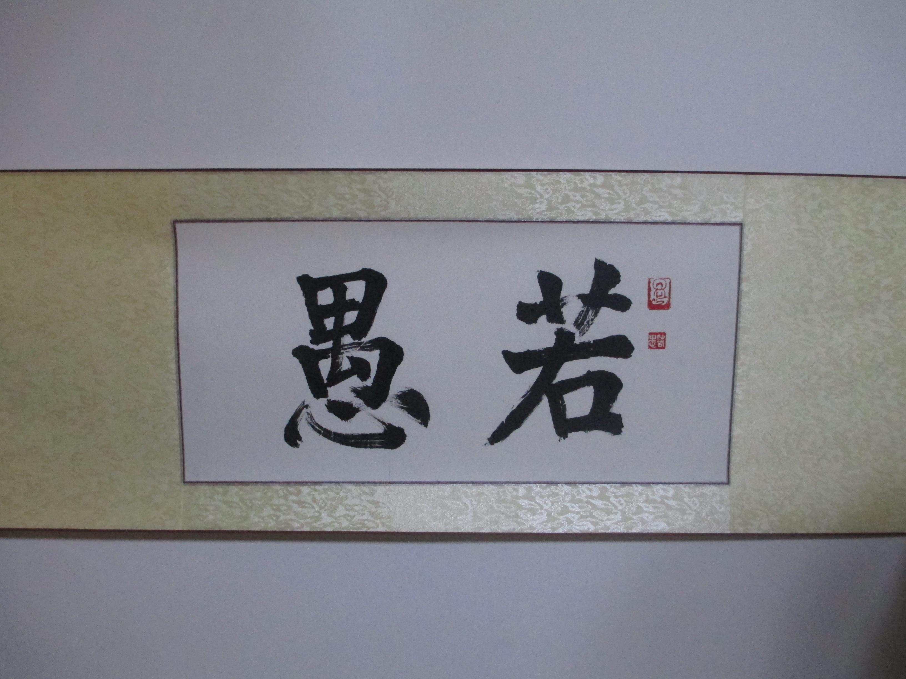

首页 | 若愚项目 | 若愚经验谈 | 若愚那些事 | 专业团队 | 加入若愚 | 联系我们
若愚团队：

创始人的偶像是李开复老师，所以深受开复老师影响，认同其诚信理念，所以诚信是加入
若愚的第一条件而能力是第二位的，因为能力可以通过读研的锻炼得到，但是诚信却是我
们每个人必须从小养成的习惯，若愚团队痛恨不诚信不诚实的人，所以若愚只欢迎诚信的
应聘者,若愚的师资须通过团队面试，我们坚持若愚人才鉴定标准，所以经过若愚评定标准
的讲师团一定足够给力
团队：
id: 001 若愚 团队的吉祥物 @若愚教育
id: 002 老韩 专注于若愚正常运作和决策 @bhan_NTU
id: 003 老管 专注于若愚技术平台架构 @double12gzh
id: 004 大黄 专注于若愚市场推广和法律版权 @dahuang
id: 005 小李 专注于若愚香农（信息学院）项目运作 @lixiao
id: 006 老赵 专注于若愚李嘉图（经济学院）项目运作 @zhaoyuxiao
id: 007 小刘 专注于若愚李嘉图（经济学院）项目辅导
求贤：
id: 007 管理 专注于若愚德鲁克（管理学院）项目辅导
id: 008 化学 专注于若愚化学家（管理学院）项目辅导
id: 009 食品 专注于若愚食品学家（管理学院）项目辅导